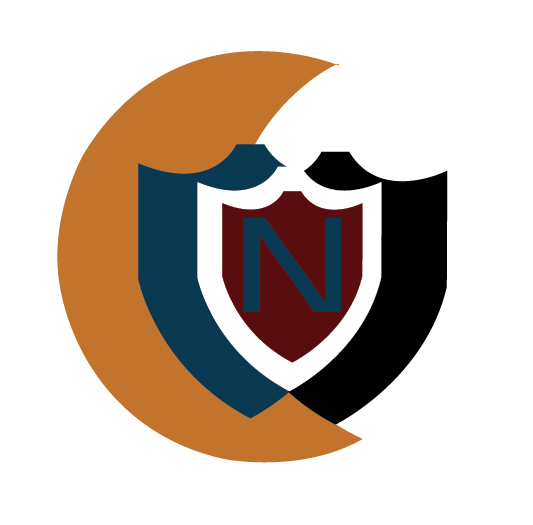
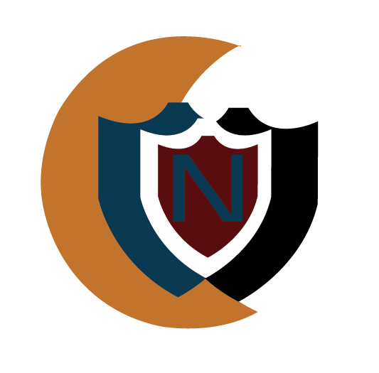

Logo V1
I started to mess around with the colors of the logo. This would give the band a more colorful aspect.
You can also see that I experimented a bit with the moon of the band. I thought that their font of the original logo was a bit standard so I also experimented with other fonts. Giving a more playful aspect. I thought if Kevin did not want to let go of the logo, it was definitely because of the moon, since the font is such a standard font. The top one has the colors of reggae, even though Kevin said he did not want it. I made the colors a bit pastel. Therefore the reggae colors don't pop out and are less noticable.
The bottom logo is a bit bolder and that is why the Moon is partly inverted. This still makes the moon visible.


 
